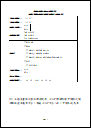

← 儀表板
備援訓練教材｜獨立模組
iCAP 職能導向課程規劃與執行報告書
格式精靈導覽 — 依勞動部 ODT 格式拆解，可隨時開啟使用
用途：協助撰寫「職能導向課程規劃與執行報告書」— 封面申請欄位、壹課程資訊、貳表1–12、參佐證資料。不限單一會議場次，作為備援訓練章節獨立運作。
與 iCAP 平台申請的差異：本 ODT 格式供課程規劃與執行報告使用；iCAP 課程認證申請請依職能發展應用平台（iCAP 平台）線上申請系統欄位為準。兩者內容應一致，但欄位名稱與上傳介面可能不同。
參考教材

職能導向課程規劃與執行報告書
勞動部勞動力發展署｜ODT 公版格式
- 溯源｜發布單位：
- 勞動部勞動力發展署（職能基準發展與應用推動計畫專案辦公室）
- 文件建立：
- 2025-01-13（UTC+8，依 ODT 內建元資料）
- 最近修改：
- 2025-04-15（UTC+8，依 ODT 內建元資料）
- 版本說明：
- 勞動部公版格式（ODT）；檔案內未標示官方版次編號，以檔案內建元資料為準
- 本站封存：
- 2026-07-05
下載 ODT 格式檔
請自行下載後於本機以 LibreOffice／Word 等軟體撰寫使用。本報告書格式僅供課程使用；iCAP 課程認證申請格式請依 iCAP 平台線上申請系統為準。
開始導覽
★ 報告書格式精靈投影簡報（主投影檔）
全螢幕簡報，←→ 切換，18 頁 wizard 導覽｜meeting-display 金綠主題
講師實作填寫
簡報看完後立即動手 — 分段練習或整合提交至 Google 試算表
★ 講師學習單｜線上填寫版（整合提交）
壹課程資訊 → 表1–12 關鍵欄位練習，提交至試算表分頁 icap-report-worksheet
講師學習單索引
分段練習（壹、表1–2、表3–5、表6–8、表9–12）＋線上填寫版入口
建議使用流程
- 投影或全螢幕開啟格式精靈簡報，依章節導覽
- 簡報結束後開啟講師學習單，對照手邊草稿動手填寫
- 完成後點「提交學習單」寫入 Google 試算表；亦可列印 PDF 備份
- 交件前使用簡報第 17 頁 Checklist 自我審查
- 最後至 iCAP 平台核對線上申請欄位
報告書結構速覽
- 封面 — 申請日期、案號、課程名稱、職能依據、類型、單位、辦訓期間
- 壹、課程資訊 — 訓練需求／簡介／目的（各 1000 字）、時數、級別、對象、先備
- 貳、課程規劃內容 — 分析（表1–2）→ 設計發展（表3–8）→ 實施評估（表9–12）
- 參、佐證資料 — ADDIE 階段對照表、利益關係人參與紀錄、各項佐證文件
GitHub Pages：report-wizard-slideshow.html